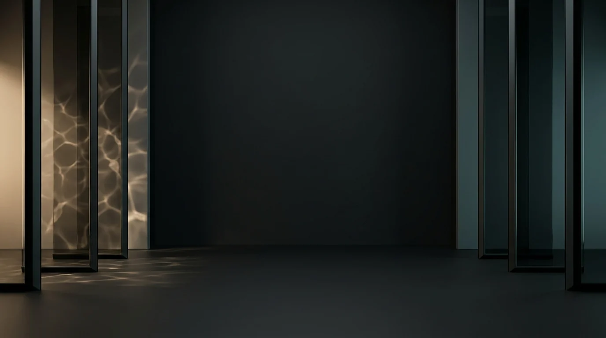
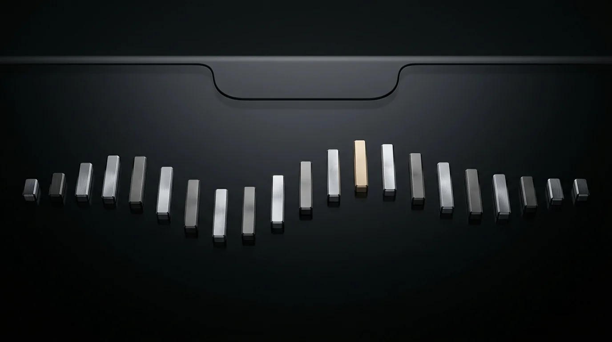
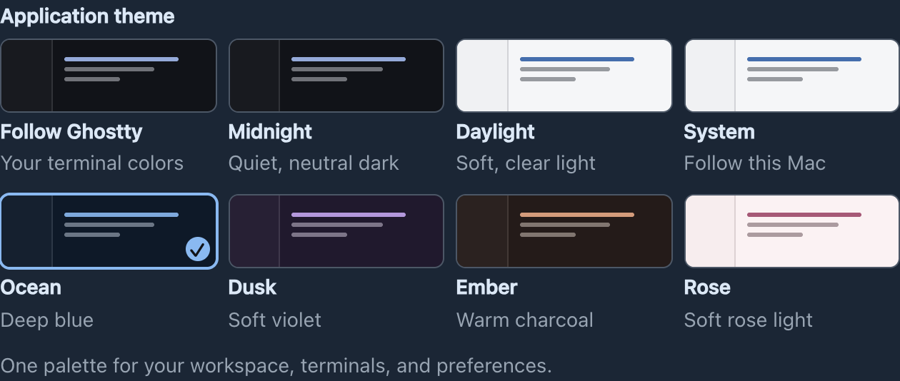
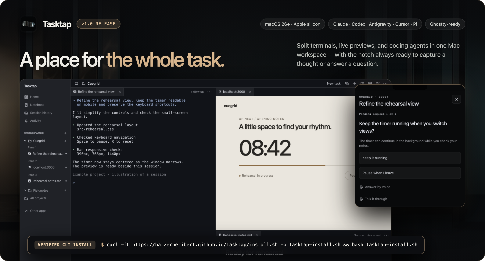
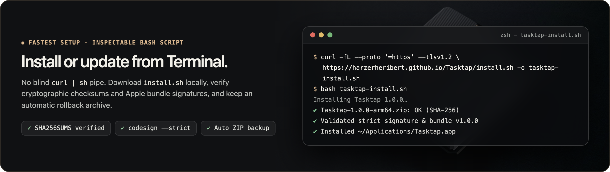

Your layout, your focus.
Split right (⌘D) or down (⇧⌘D). Group tabs by pane, expand one surface temporarily with Focus pane, and snap back to your saved tree.
Your coding agents, split terminals, and live previews in one calm workspace on your Mac — with the notch always ready when a thought arrives.
$curl -fL --proto '=https' --tlsv1.2 https://harzerheribert.github.io/Tasktap/install.sh -o tasktap-install.sh && bash tasktap-install.sh
Apple silicon · macOS 26+ · See installer guarantees & community signing note
agypi

Split right (⌘D) or down (⇧⌘D). Group tabs by pane, expand one surface temporarily with Focus pane, and snap back to your saved tree.
Render localhost servers, Markdown, isolated local HTML, PDFs, images, and audio/video right next to your terminal. Attach any view to a prompt via Ask agent.
Closing a pane or quitting the window leaves embedded PTY sessions alive in Tasktap’s local terminal service. Reopen any running thread from Session history.
Spot a layout bug in Safari or think of a refactor mid-call. Summon the notch from any app without switching windows.



Managed Claude Code and Codex sessions surface scoped questions in the notch, workspace pane, and macOS notifications at once. Answer in any one place and all three resolve.
Reported completions and errors collect in Activity — never guessed from terminal scrollback or exit code 0. Read the full Markdown report, listen with local Siri or offline Kokoro voices, or nudge the exact conversation.
Questions, reports & Codex Micro ↗Your shell loads its real startup files — zsh, fish, aliases, Oh My Zsh, and Starship included. Choose one application palette or import your Ghostty theme automatically.

Use the inspectable Terminal installer for cryptographic verification and automatic rollback backups, or download the app bundle directly.
curl -fL --proto '=https' --tlsv1.2 https://harzerheribert.github.io/Tasktap/install.sh -o tasktap-install.sh && bash tasktap-install.sh
SHA256SUMS, bundle ID, version, and codesign --strict before staging.
Tasktap.app into Application Support/Tasktap/Backups.
~/Applications or updates /Applications in place cleanly.
Prefer Finder? Download the latest release ZIP from GitHub, unzip it, and move Tasktap.app into Applications.
Get for Mac (.zip)install.sh or choose Check for Updates… (Sparkle signed archives).

Terminal Install · Download App (.zip) · Product Page · User Guide · Build from Source
Tasktap 1.0 is a native Mac workspace for coding agents, real terminals, and the things you build. Keep an agent or shell beside a live preview or Markdown note, split panes recursively as you work, and use your MacBook’s notch (⌃ ⌥ Space) to capture a thought or answer an agent question from any app.
⌘D / ⇧⌘D), and a calm sidebar showing only open surfaces.localhost previews, Markdown, isolated local HTML, PDFs, images, audio, and video side-by-side. Attach any preview to a reviewed prompt with Ask agent.⌃ ⌥ Space to type or hold to dictate from any app. Review Task, Destination, and frozen Context before dispatch.agy), Cursor CLI (cursor-agent), and Pi (pi) with your own shell, Starship prompt, and Ghostty color palette.
The fastest way to install or update Tasktap on macOS 26+ (Apple silicon) is the official inspectable Bash installer — no blind curl | sh pipe required:
curl -fL --proto '=https' --tlsv1.2 https://harzerheribert.github.io/Tasktap/install.sh -o tasktap-install.sh && bash tasktap-install.shinstall.sh verifiescurl -fL --proto '=https' --tlsv1.2 https://harzerheribert.github.io/Tasktap/install.sh -o tasktap-install.sh
less tasktap-install.sh
bash tasktap-install.sh 1.0.0| Installer Guarantee | Behavior |
|---|---|
| Cryptographic & bundle checks | Verifies SHA256SUMS over TLS 1.2+, runs codesign --verify --deep --strict, and checks bundle ID + version. |
| Smart Applications target | Installs fresh copies into ~/Applications/Tasktap.app or updates /Applications/Tasktap.app in place; prevents duplicates. |
| Automatic rollback backup | Saves your previous Tasktap.app as a verified .zip in ~/Library/Application Support/Tasktap/Backups. |
| Zero security bypasses | Never removes quarantine flags or weakens Gatekeeper. Read source (site/install.sh). |
.zip Download & First Launch
Tap ⌃ ⌥ Space to type or hold to dictate, then press ⌘ Return to inspect Task, Destination, and frozen Context before starting.
Answer Claude Code & Codex questions once from the notch or workspace, and unify your UI across 8 palettes including Follow Ghostty.
| Action / Surface | What happens |
|---|---|
| Close a tab, pane, or window | Views close; embedded PTY processes stay running in the local terminal service and reopen from Session history. |
| Close a workspace | Split tree and open tabs are saved; restore anytime via + → Closed workspaces. |
| Markdown & Local HTML | Sandboxed local previews with Source / Preview toggle and Ask agent attachment (no native command bridge or remote network leakage). |
| Web, PDF, Image & Media | Localhost dev servers, zoomable images, PDF navigation, and WebKit media playback beside your shell. |
Preserves every technical detail from the current README in scannable collapsible sections: supported CLIs (Claude Code, Codex, Antigravity, Cursor CLI, Pi), local-default On this Mac preparation vs. reviewed remote payloads, opt-in external session discovery, scoped report exports, Siri/Kokoro narration, and xterm.js vs. Ghostty/shell layer boundaries.
git clone https://github.com/HarzerHeribert/Tasktap.git
cd Tasktap
./scripts/build-mac.sh
open build/Tasktap.app<p align="center">
<a href="https://harzerheribert.github.io/Tasktap/">
<img src="site/assets/readme-hero.png" width="100%" alt="Tasktap 1.0 — A Mac workspace for coding agents, split terminals, live previews, and a thought-catching notch.">
</a>
</p>
<p align="center">
<a href="https://github.com/HarzerHeribert/Tasktap/releases/latest"><img src="https://img.shields.io/badge/Tasktap-v1.0.0-ddba91?style=flat-square&labelColor=171819" alt="Release v1.0.0"></a>
<img src="https://img.shields.io/badge/macOS-26%2B%20%C2%B7%20Apple%20Silicon-b0b1ad?style=flat-square&labelColor=171819" alt="macOS 26+ Apple silicon">
<a href="https://harzerheribert.github.io/Tasktap/install.sh"><img src="https://img.shields.io/badge/Installer-SHA--256%20%2B%20codesign-8fd19e?style=flat-square&labelColor=171819" alt="Verified Bash Installer"></a>
<a href="LICENSE"><img src="https://img.shields.io/badge/License-Apache%202.0%20%2B%20Commons-8d908d?style=flat-square&labelColor=171819" alt="License"></a>
</p>
<p align="center">
<strong><a href="#install-in-one-command">Terminal Install</a></strong> ·
<a href="https://github.com/HarzerHeribert/Tasktap/releases/latest">Download App (.zip)</a> ·
<a href="https://harzerheribert.github.io/Tasktap/">Product Page</a> ·
<a href="https://harzerheribert.github.io/Tasktap/docs/">User Guide</a> ·
<a href="#build-and-verify">Build from Source</a>
</p>
---
**Tasktap 1.0** is a native Mac workspace for coding agents, real terminals, and the things you build. Keep an agent or shell beside a live preview or Markdown note, split panes recursively as you work, and use your MacBook’s notch (`⌃ ⌥ Space`) to capture a thought or answer an agent question from any app.
- **One workspace for the whole task** — Real PTY terminals, tabs, nested horizontal/vertical splits (`⌘D` / `⇧⌘D`), and a calm sidebar showing only open surfaces.
- **Live output right beside the terminal** — Render `localhost` previews, Markdown, isolated local HTML, PDFs, images, audio, and video side-by-side. Attach any preview to a reviewed prompt with **Ask agent**.
- **The notch keeps agents within reach** — Tap `⌃ ⌥ Space` to type or hold to dictate from any app. Review **Task**, **Destination**, and frozen **Context** before dispatch, and answer Claude Code or Codex questions right from the notch.
- **Built for your existing CLI stack** — Launches **Claude Code**, **Codex**, **Antigravity (`agy`)**, **Cursor CLI (`cursor-agent`)**, and **Pi (`pi`)** with your own shell, Starship prompt, Oh My Zsh plugins, and Ghostty color palette.
---
## Install in One Command
<p align="center">
<a href="https://harzerheribert.github.io/Tasktap/install.sh">
<img src="site/assets/readme-installer.png" width="100%" alt="Install or update Tasktap from Terminal with SHA-256 verification, strict codesign check, and automatic ZIP backup.">
</a>
</p>
The fastest way to install or update Tasktap on **macOS 26+ (Apple silicon)** is the official inspectable Bash installer — no blind `curl | sh` pipe required:
```sh
curl -fL --proto '=https' --tlsv1.2 https://harzerheribert.github.io/Tasktap/install.sh -o tasktap-install.sh && bash tasktap-install.sh
```
<details>
<summary><strong>Inspect the script first, pin a specific version, or see what <code>install.sh</code> verifies</strong></summary>
<br>
Review the 69-line script in your pager before running, or pass an explicit stable tag such as `1.0.0`:
```sh
curl -fL --proto '=https' --tlsv1.2 https://harzerheribert.github.io/Tasktap/install.sh -o tasktap-install.sh
less tasktap-install.sh
bash tasktap-install.sh 1.0.0
```
| Installer Guarantee | Behavior |
| --- | --- |
| **Cryptographic & bundle checks** | Downloads `SHA256SUMS` over TLS 1.2+, verifies the archive hash, runs `codesign --verify --deep --strict`, and validates `CFBundleIdentifier` + `CFBundleShortVersionString`. |
| **Smart Applications target** | Installs fresh copies into `~/Applications/Tasktap.app`, or updates `/Applications/Tasktap.app` in place; refuses to create duplicate installs across both folders. |
| **Automatic rollback backup** | Archives your previous `Tasktap.app` as a verified `.zip` in `~/Library/Application Support/Tasktap/Backups` before atomic replacement. |
| **Zero security bypasses** | Never clears quarantine attributes or weakens macOS Gatekeeper. Source: [`site/install.sh`](site/install.sh). |
</details>
### Alternative: Direct `.zip` Download & First Launch
1. **Download:** Grab the latest archive from **[GitHub Releases](https://github.com/HarzerHeribert/Tasktap/releases/latest)**, unzip it, and move **Tasktap.app** to **Applications** (subsequent updates work inside the app via Sparkle’s signed **Check for Updates…**).
2. **First launch note:** Community builds are locally signed and **not Apple notarized**. On first open, macOS may ask you to confirm via **System Settings → Privacy & Security → Open Anyway**. See [release and update instructions](docs/releases.md).
3. **Prerequisites:** Agent sessions require **Python 3** and an installed, signed-in agent CLI. Local notes work without an agent. Xcode is needed only when building from source.
---
## Inside the Workspace
<p align="center">
<img src="site/assets/product/workspace.png" width="100%" alt="Tasktap workspace showing an agent terminal on the left and a localhost preview stacked over Markdown notes on the right.">
</p>
<table>
<tr>
<td width="50%" valign="top">
<h3 align="left">01 · Capture & Review from Any App</h3>
<p>Tap <kbd>⌃</kbd> <kbd>⌥</kbd> <kbd>Space</kbd> to type or hold to dictate. Add an optional sketch and press <kbd>⌘</kbd> <kbd>Return</kbd> to inspect the handoff before anything runs:</p>
<ul>
<li><strong>Task</strong> — Edit phrasing without resetting your destination.</li>
<li><strong>Destination</strong> — Pick workspace, agent, host, model, or thread.</li>
<li><strong>Context</strong> — Active URL or file path is frozen the instant capture starts.</li>
</ul>
<p align="center"><img src="site/assets/product/review.png" width="320" alt="Tasktap Review screen"></p>
</td>
<td width="50%" valign="top">
<h3 align="left">02 · Notch Decisions & Cohesive Themes</h3>
<p>Supported <strong>Claude Code</strong> and <strong>Codex</strong> questions appear in the notch, workspace pane, and notifications simultaneously — answer once and every surface resolves.</p>
<p align="center"><img src="site/assets/product/question.png" width="320" alt="Tasktap Notch decision card"></p>
<p>Choose from 8 full-app palettes (including <strong>Follow Ghostty</strong>) with optional native macOS translucency and blur:</p>
<p align="center"><img src="site/assets/product/appearance.png" width="100%" alt="Tasktap eight appearance themes"></p>
</td>
</tr>
</table>
---
## Quick Setup & Daily Workflow
1. **First run:** Complete guided setup or choose **Set up later**. Tasktap separates **request preparation** (local matching + on-device Apple model by default) from the **project agent** doing the work.
2. **Open a project:** Click **+** beside **Workspaces** to open an existing folder or create one (default location: `~/projects`, configurable in **Preferences → Workspaces** without moving existing projects).
3. **Split & preview:** Press **⌘D** (split right) or **⇧⌘D** (split down). Use toolbar **+** for **Open file…**, **Web preview…**, or **Project files**. Closing the workspace window leaves the resident notch active in your menu bar.
### Workspace & Process Lifecycle
| Action | What happens |
| --- | --- |
| **Close a tab or pane** | Views close; embedded terminal processes keep running. Reopen anytime from **Session history**. |
| **Close a workspace** | Tabs and split layout are saved. Restore via **+ → Closed workspaces**. |
| **Quit Tasktap** | Embedded sessions continue running while Tasktap’s private local terminal service remains alive. |
| **Session details → Stop session…** | Explicitly terminates that process after confirmation. |
| **Reboot Mac / lose terminal service** | Processes end cleanly. Tasktap never auto-reruns commands; supported agent threads can be resumed explicitly. |
### Supported Previews & Sandbox Boundaries
| Surface | Behavior & Security Model |
| --- | --- |
| **Markdown** | Headings, lists, tables, task lists, code, and local images (**Source** toggle included). Embedded HTML and automatic remote images are disabled. |
| **Local HTML** | Interactive pages with local scripts/assets (**Source / Preview** toggle). Runs in an isolated frame without Tasktap’s native bridge; network requests and nested frames are blocked. |
| **Images, PDF, Text & Media** | Image fit/zoom, PDF page navigation, UTF-8 code/text views, and WebKit-supported audio/video playback. |
| **Web preview** | Localhost dev servers or embeddable sites, with **Open in browser** for pages requiring browser sign-in or remote framing permissions. |
[Preview boundaries and workspace architecture →](docs/integrated-workspaces.md#media-surfaces)
---
## Agents, Routing, Privacy & Appearance
<details>
<summary><strong>Supported agents, terminal hosts, and request preparation privacy</strong></summary>
<br>
- **Supported project agents:** Launches installed **Claude Code**, **Codex**, **Antigravity (`agy`)**, **Cursor CLI (`cursor-agent`)**, and **Pi (`pi`)** using each tool’s own CLI login and settings (**Preferences → Agents → Session models**).
- **Embedded & external terminals:** Uses Tasktap’s embedded **xterm.js** terminal by default while respecting external preferences for **Terminal**, **cmux**, **Ghostty**, **iTerm2**, **Warp**, **WezTerm**, and **kitty** (**Change destination → Open this session in** overrides per session).
- **Request preparation vs. execution:** Default **On this Mac** keeps preparation local. Optional routes include local/compatible model servers (Ollama, vLLM, LiteLLM), Codex login, interactive Claude Code, Keychain-stored provider API keys, or eligible ChatGPT sign-in. Before remote preparation, Tasktap previews what will be sent and offers local preparation instead; audio, sketch geometry, and resolved reference attachments are excluded from remote preparation payloads.
- **Permissions & Git:** Fresh Codex handoffs offer exact-folder trust with the workspace-write sandbox; Claude Code requests Auto mode where supported. Tasktap provides default Git guidance without creating branches, worktrees, or commits behind your back.
- **External session discovery:** **Find sessions in other apps** is opt-in (**Preferences → Workspaces**) and never silently migrates external threads into embedded terminals.
- **Diagnostics:** Exposes effective instructions, routing evidence, payloads, and receipt IDs while excluding connection secrets and redacting recognizable credentials.
</details>
<details>
<summary><strong>Decisions, reports, notifications, voice, and Codex Micro</strong></summary>
<br>
- **Scoped agent tools:** Managed Claude Code and Codex sessions settle decisions across pane, notch, and notifications simultaneously. Closing a card defers it; ordinary terminal output and exit code `0` never impersonate completed tasks.
- **Reports & Activity:** View labeled excerpts in Session details, open **Read full report**, or use **Export summary** to export the report document.
- **Alerts & narration:** **Preferences → Voice & alerts** displays Tasktap’s switch separately from macOS authorization, banners, and Focus suppression. Supports local Siri voices and optional offline Kokoro narration, plus optional hardware **Codex Micro** controls ([keyboard & controller guide](docs/controls.md)).
</details>
<details>
<summary><strong>Appearance layers: App palette vs. Ghostty vs. Shell</strong></summary>
<br>
| Layer | Controls |
| --- | --- |
| **Preferences → Appearance** | Application palette (**Follow Ghostty**, **Midnight**, **Daylight**, **Ocean**, **Dusk**, **Ember**, **Rose**, or **System**) plus native window translucency and blur. |
| **Workspace actions → Terminal preferences** | Shell executable, text-size override, Ghostty font/cursor import, and **Reload Ghostty settings**. |
| **Your shell startup** | `zsh` / `bash` / `fish` config, aliases, Oh My Zsh plugins, and Starship prompts. |
Tasktap renders terminals with **xterm.js** (not `libghostty`), importing supported Ghostty palette/font/cursor fields with a neutral fallback when unavailable. Text stays opaque over translucent backdrops, **Reduce Transparency** takes precedence, and **Reduce Motion** pauses animated artwork.
</details>
---
## Build and Verify from Source
Requires Git, Python 3, and Xcode or Command Line Tools with the **macOS 26 SDK or newer**:
```sh
git clone https://github.com/HarzerHeribert/Tasktap.git
cd Tasktap
./scripts/build-mac.sh
open build/Tasktap.app
```
Run the style, workspace, installer, and site verification suite (`npm ci` + Playwright Chromium or `BROWSER_EXECUTABLE` for browser checks):
```sh
bash scripts/verify-installer.sh
python3 scripts/verify-style.py
node scripts/verify-review.cjs
node scripts/verify-workspace-splits.cjs
node scripts/verify-workspace-documents.cjs
python3 scripts/verify-workspace-terminals.py
python3 scripts/build-site.py
```
The [browser preview](prototype/index.html) uses fictional data. Native `--verify-interface` and `--verify-workspace` exercise real Mac UI/PTY behavior with fixtures; `--verify-live` uses an authenticated Codex CLI. See the [implementation and QA plan](docs/implementation-gap-plan.md).
[Requirements](docs/requirements.md) · [Interaction design](docs/interaction-design.md) · [Workspace architecture](docs/integrated-workspaces.md) · [Agent question protocol](docs/agent-questions.md) · [Release maintenance](docs/releases.md)
## License
Source-available under **Apache License 2.0 with the Commons Clause**. Personal/internal use, modification, and free redistribution are permitted; selling Tasktap or a service whose value derives substantially from it requires permission. Third-party tools retain their own licenses. See [`LICENSE`](LICENSE).
install.sh.All changes live safely inside design/previews/tasktap-mockup/ until you’re happy with every word, layout choice, and visual asset.
install.sh in README.md — GitHub visitors only saw manual ZIP instructions.<details> accordion ("Prefer installing with Terminal?").README.md — Only a 112px icon followed by 130 lines of dense prose; none of the 4 product screenshots were shown.install.sh source modal, and trust badges above the fold.#download — Side-by-side with Direct ZIP, complete with simulated terminal output and 4 cryptographic/rollback guarantees.## Install in One Command in README.md — Retina composited Terminal banner + copyable Bash block + verification table right near the top.README.md, keeping 100% of Tasktap’s honest technical documentation neatly organized.Generated under your subscription to match Tasktap’s obsidian, smoked optical glass, brushed titanium, and warm #ddba91 champagne-brass palette — never faking UI text, always framing real app pixels:
workspace.png on the Landing Page and powers the Retina readme-hero.png composite.